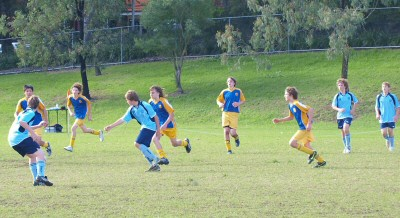

| Match Report - 13 June 2009 |
|
|
|
|
|
|
|
| U6 Purple |
North Ryde 0 - All Saints H/Hill A 5

|
|
|
|
This week's game saw the team dribbling and chasing the ball the full length of
the field, up and back the whole match. Good exercise and great excitement for
the cheer squad.

Congratulations to the Player of the Week - Lucas.

After the game, some of the team shared what they loved about the game today...
Will: "Kicking the ball"
Cameron: "I got to see my team mates, except Jasmine
who was sick."
Lucas: "It was a sunny day"
I heard that Jayden likes his new jersey alot, and
Lukah played a great match also.
- Sally Last (Supermum)
|
|
|
| U6 Red C |
|
North Ryde Red C - All Saints H/Hill B
|
|
|
|
It was good. We did a lot of running up the field. Fletcher and Martin scored goals.
- Kevin Farahani (Player, aged 5)
|
|
|
| U7 Red A |
|
North Ryde Red A - North Ryde Red B
|
|
|
|
Mate against Mate, Red against Red, almost sounds like a State of Origin match,
and the rivalry was similar in this grudge match between our Red A and B teams.
Both sides gave it their all for the full 40 minutes, showing some great ball skills
in attack, and neither side willing to budge in defense. The score line was back and
forward all game, with the game finishing with a closely contested 4-all draw.
Afterwards we had the 2 teams, and parents, stick around for a sausage sizzle and
drinks, where the boys shared their thoughts on the game, and who should have REALLY
won!
Red A's 'Best Ball Skills' certificate went to Troy, and Arlen took out the 'Best
Team Player'. The best all rounder trophy went to Alex C.
- Rob Wylie (Coach, U7 Red A)
|
|
|
| U7 White |
|
North Ryde 2 - Gladesville Sharks 7
|
|
|
|
It was clear early on that we were up against a well drilled team in the Sharks.
The Sharks were camped in our half for most of the first quarter with strong defence
from William saving the day from an early attack on our goal. Ben was in the thick
of it early with his usual good clearance from the back. Constant attack from the
Sharks was rewarded with an early goal. Angus made a strong tackle turning defence
into attack and made some good breaks down the left side and through the middle.
Coach Hanley was really pleased with the effort and teamwork shown by the boys who
were down by two goals at half time.
The Sharks scored a couple of quick goals early in the second half followed by some
good counter attack led by Raphael down the right wing. Our persistence was rewarded
with Henry making a break down the middle and finding the back of the net for a well
deserved goal. While our other goal was an own goal from the Sharks, Ben showed good
skill up front and was unlucky with one shot hitting the post.
Coach Hanley awarded Jason our Player of the Week for his excellent tackling, Angus
2 points and Raphael 1 point.
Thanks to Hugh's dad, Nigel for umpiring the second half.
- Gavin Lochrin
|
|
|
| U7 Yellow |
|
North Ryde 3 - Macquarie Dragons A 1
|
|
|
|
Ooooowwww Yeah! A WIN for the boys and what a top effort! The last 4 games have
really come together and the boys certainly have the go forward and confidence to
give any team a good run for their money. We played another strong side but we were
prepared and didn't take a backward step.
You can see the boys totally enjoying their soccer out there and what a great day,
started a little cold but wormed up quick when the ball went into play. Few runs up
close to goal early but came against some good defence. Run against play saw the
Dragons pot a lucky goal against us half way into the first half but the North Ryde
boys didn't let them have it easy. Just a little patience needed which the boys showed
and final paid off with the reliable Jarrod showing his composure in front of goal
slamming home to bring the score level.
Second half was on with the Luke's and Jay giving the big hits to give us good field
position. Putting us in front it came from the energized Blake, slotting his first
goal of the year from some tuff stuff bustling, top job. Luck has been against us
in the last 4 games but a turn came our way with a home goal conceded from the
Dragons gave us a 2 goal lead.
Great improvement from Kaiden's running with the ball really put the side in great
attacking positions which gave him the player of the match.
Well done boys your all showing you can mix it with the best.
- Dave (Coach)
|
|
|
| U8 Red |
|
North Ryde - Macquarie Dragons B
|
|
|
|
It was a frost bitten morning and while none could feel their fingers all could feel
the excitement of the upcoming clash of North Ryde v Maquarie Dragons.
Maquarie started very well with quite a few runs from their mini Ronaldo. Our focus
for the week had been switch passing and connective play. After the first 5 mins
Macquarie was winning three switch passed to one. At the 5 minute mark our players
seem to thaw and suddenly there were switch, line and back passes flying everywhere.
By half time we were leading 9 switches to 4. Our second focus had been side to side
touches and Jarvis, Jayden and Steven did these wonderfully. If the score was even
at the end this would have given us the win. The other team put two switches together
to bring the scores closer but then Lachlan and Charlie switched the ball wonderfully
to drive us closer to victory.
The other team started to look like they were in a dryer, spinning this way and that
way trying to catch up with our great passing. Nicholas' line runs combined with his
switch passes, done just before the defence got to him, were something to behold.
Just when we thought it couldn't get any better Hugh showed the teams versatility
with a magnificent pull back and Lawrence dribbled to free space with the speed of
a leopard.
While the score does not always matter it was an emphatic 16 to 7 connecting passing
victory. Well done to all!
- Tim Thorne
|
|
|
|
|
|
The clash between the North Ryde and WPH-Cherrybrook U9 Div 1 sides was a hard-fought
and rather scrappy affair, and one that probably won't be remembered as one of North
Ryde's more memorable encounters of recent times.
The WPH-Cherrybrook team is a worthy opponent in this division and it was clear that
they would be aiming to upset their North Ryde rivals who were just one rung above
them on the league table prior to this match. The stage was set for a classic battle
of two talented and competitive sides, but North Ryde just couldn't fire on the day,
and a rather lacklustre performance gave WPH-Cherrybrook a 4-2 win that, all things
considered, they deserved.
WPH-Cherrybrook's first goal came within the first minute of play when a rather
ordinary shot at goal, aided by some early-morning moisture, skewed off the keeper's
gloves and fell behind the goal line to grant them the lead. Another goal followed
shortly afterwards and the normal resilience of the North Ryde defence and midfield
suddenly looked shaken and vulnerable. Harrison and Anthony were made to work hard
to keep their charging rivals at bay.
Tom Maclean and Shannon levelled the score with a goal apiece later in the first half,
Shannon taking advantage of a loose ball in the opponents half that was strangely void
of defence, and Tom getting a powerful boot onto a ball that had popped out of a
skirmish in the goal mouth. Two terrific goals to bring the scores level again, and
keep North Ryde in the hunt.
Young Tom Hurst worked valiantly at the back in his efforts to repel the attacks and
reverse the passage of play. Patrick and Tom Maclean worked hard at their passing game
to create new opportunities, but more often than not had to succumb to frantic defence
if and when the passing chain broke down. WPH-Cherrybrook continued to find gaps in
the North Ryde defence and managed several shots at goal, adding two more to their
tally before the break to lift their lead to 4-2.
The second half began on a more positive note for North Ryde. Jett and Charlie were
keen to get stuck in, and David was a bundle of energy rearing to go after sitting out
the entire first half. Adam, relieved by Jack of his goal-keeping duties found himself
in more familiar territory up front and the team suddenly found some of the impetus
that they had been missing in the first half. The ball moved up and down the field at
a rather uncontrolled pace, and North Ryde's best chance of the half was a shot that
ricocheted off the keeper onto the goal line at his feet, but which was deemed to have
been kept out of the goals by a scrambling keeper.
Yet despite the apparent resurgence of the North Ryde team, and their near misses,
the standard of their field game remained more frenetic than it was controlled or
calculated. There was a fair bit of bunching up and first-time kicks which, when they
failed, completely reversed the course of play and had North Ryde scambling from a
position of authority to one of desperate defence.
Jack kept vigil in goal, and Jett was a tower of strength in halting the opposition
in their tracks. David teamed up effectively with Tom Maclean in the midfield to move
the ball across the field while Charlie, Adam and Eli employed their dribbling skills
to create some opportunities up front. When the final whistle blew it felt as though
a washing machine had been turned off. The final score remained 4 - 2, and it might
be fair to say that the second half belonged to North Ryde, albeit marginally. But
well done to WPH-Cherrybrook, who played hard, well and fairly to secure their win.
Luckily the kids are able to recover from these losses a lot quicker than their
stress-fractured parents, and we look forward in anticipation to seeing them in action
again next weekend.
- Mark Howard (Confessions of a stand-in ref)
|
|
|
|
|
|
The North Ryde under 9/4's travelled out to Kenthurst last Saturday to take on the
Macquarie Dragons. All the youngsters were keen to have a good game after a
disappointing loss the previous week.
 The first half saw numerous raids into Dragon's territory as the midfielders and
forwards combined well to create pressure on the defence as numerous shots at goal
were taken with little luck. With the scores at 0-0 at half time some magic oranges
and words of praise and encouragement saw the mighty blue and golds take the pitch
with renewed vigour determined to put the Dragons away.
The first half saw numerous raids into Dragon's territory as the midfielders and
forwards combined well to create pressure on the defence as numerous shots at goal
were taken with little luck. With the scores at 0-0 at half time some magic oranges
and words of praise and encouragement saw the mighty blue and golds take the pitch
with renewed vigour determined to put the Dragons away.
This side has shown mixed form this year and to their credit combined well in the
second half. Continued pressure on the Dragon's defence reaped the reward of a
fantastic goal scored by the skilful Rhea D'Mello.
Other players who excelled in a team where all the players did fantastically were
Tom Sharpe playing out of his comfort zone to roam the midfield, out of his natural
sweeping role. Oscar Dixon, who continued to pressure the defence with his attacking
raids, Peter Renouf showing his usual aggression in the midfield and of course our
rock defender Andrea, who never stops watching the ball, and an uncanny knack of
dispossessing most attackers who go anywhere near her. The end result a well deserved
1-0 win for a much improved side overall.
- Mark Dixon
|
|
|
|
|
|
This is why we enjoy our Saturday morning outings to watch soccer!
 Not because we won, not because we saw our child kick a goal or two (although
these points surely count?), but because we all thoroughly enjoyed watching our
team of honest triers give it a red hot go and our opposition side line watchers
were equally laid back and friendly as us!
Not because we won, not because we saw our child kick a goal or two (although
these points surely count?), but because we all thoroughly enjoyed watching our
team of honest triers give it a red hot go and our opposition side line watchers
were equally laid back and friendly as us!
For this first half, the ball hardly crossed the halfway line and our first
half keeper Ben only handled the ball once and that
was for a goal kick!
We went on raid after raid and by half time were only up 2 nil. You see, the
Redbacks used a rare tactic for this age group and division called... Bunching
up! They bunched up along the goal line and our super strikers (there were 8
of them) could hardly puncture their last line (literally)
of defence.
The second half was a different story with a more free style of game played.
Great positional play by Maggie and
Brooke was a delight to behold with them 'reading'
the game like div 1 players! Julian was as solid as
ever at the back and Thomas was at his stream-rolling
best carving up the middle.
Chris was everywhere making some great tackles and
working really well with Massie who had a few
dribbling frenzies! Ben's calling for the ball was a
feature as well as thoughfully threading the ball to Massie who scored one of
his 2 goals from close range. Saxon was his usual
inspiring self making a few thoughtful passes, as well as
Josh who for his slight stature made some amazingly
large clearing kicks.
Towards the end of the game Luke could be seen on
the goal line trying to 'centre' the ball - this is something new we have
tried and should be encouraged. And this scribe really enjoyed observing
Tim react to the positive encouragement from the
sideline, going in boots 'n all to tackle those red shirted folk. But for me,
the player of the match went to Benyad for his dramatic
improvement in the way that he read the game and his endless search for 'free
space'.
Well done to you all! Such was the player's elation at the final whistle, that
at the after match interviews, those quizzed did not know the score - but one
thing for sure, they knew that they enjoyed their outing on a Saturday morning
to run around with their buddies in the Blue & Yellow.
- Andrew Curdie (Coach)
|
|
|
|
|
|
North Ryde under 13's turned up for a game against the unbeaten West Pennant Hills
at Edward Bennet Park. Well the boys played some excellent football. Eman scored
the first goal and then Lewis scored a goal from a corner. This left the other team
stumped. Luke was running around in defence and stopped WPH forwards making any
progress. The centres with Ben & Hayden where pushing up the ball to our forwards,
Eman, Elia and Kyle on the left wing. Tim played an excellent game marking and
distracting one of their forwards. Q-one is progressing well in his first season
and never stops trying. Nat protected our goals and we effectively controlled the
game! Chris was strong as sweeper and made a few runs from our goal box to WPH goal
box. Mana was putting in strong runs in defence and attack.
The second half was more of the first half with Elia putting in a goal to make it
3-0!
Then WPH finally found a goal and this lifted the intensity of the game. Another
goal by WPH and the game was 3-2. With minutes to go the NRS team tried to retain
and hold onto their lead but they managed to slip in another goal with around a
minute to go. WPH manage to salvage a draw but the smiles on the NRS team and
parents was golden. WPH coach conceded we where their toughest match. Most
importantly it showed that NRS can match it with any team in the competition! Paul
Uhrig was ecstatic with the team and so where the parents.
- Joe Rosefels
|
|
|
|
|
|
Well now what was that?

Its amazing what a little effort will produce. I have been watching you guys playing
on the same side since the start of the season. But today, for the first time, you
guys played as a TEAM. Today was a milestone and the first day of the rest of the
season. Today was the first and I KNOW not the last that every last member gave it
their all. What a turnaround. This is the way we parents, coach and manager know you
guys can play.
To see the sweat pouring off the faces at half time and to see the glimmer of hope in
the eyes that normally stare at the ground was fantastic. The score board at the end
in no way reflected the better team. Even with a loss it was the best I have felt in
years as a spectator.
Now you all know as Barry said at the end of the game what it
feels like in your guts to 'hurt from trying'. But like the man said, 'its a GOOD hurt".
Even with the score board against us we still won - TOGETHER
- Frank Hough
I can only echo Frank's comments, the performance of every player on the team was that
of total determination, commitment and concentration. The new formation with Regan C
as sweeper, Sam B and Liam T holding the centre with Stephen B-H moving to left
midfield and William G as stopper worked well. Regan C's effort at the back were
worthy of a man of the match award, however on the day everybody was man of the
match.
Well done to Stephen B-H on scoring a cracking goal.
A special thanks to Robert J & Tyrone P from the 14's side who came along as subs for
us. Tyrone's efforts in goal were outstanding and Robert J also played strongly doing
all that was asked of him. Thank you boys.
The sentiments of the opposition coach to Barry after the game that 'We got the goals
but the better team lost' was echoed by the referee who said that it was the best 15s
game he had refereed this year. Well done boys. The next one will be a win if you can
repeat that performance.
- Bill Greer (Manager)
|
|
|
|
|
|
The boys were eager today to play the top of the table Gladesville Sharks. This was
1 vs 2 and was touted to be a pretty good clash. The boys unfortunately had been hit
by swine flu and had 4 players out. Greg, Firgal, Karim and Carl were all unfit to
play. This meant there would only be three reserves but I'm sure the boys would be
up to it.
The start was very physical and an early injury to Higgo meant that Nth Ryde were
one more player down. The Sharks received an early yellow card for a blatant trip
and were very vocal with the referee. Nth seemed to be under the early pressure and
I witnessed two great saves early on by Agro, he was keeping Nth Ryde in the game.
Smithy was also having a brilliant game in defence but was yelling often to Darren
on the sideline that he wanted to be subbed. Mark Hesse pulled off some great
intercepts to halt the progress of the ever attacking Sharks. The game got messier
as the intensity rose and the ref had problems with the chatty Sharks. The game was
halted for a few minutes while a counselling session was given to one very vocal
Sharks player! The game continued and Agro kept pulling off save after save. Nth
were making some crucial errors and giving the Sharks the opportunities they needed.
If Nth had not had such a great goal keeper they would have been behind 5-0 at half
time. They were not closing the man down with the ball and were not putting passes
to feet. They were defending well though and at half time the score was a respectable
0-0 which was a good position for Nth Ryde to be in.
Nth started the second half well and had composed with words from their coach. The
Sharks had no reserves and looked tired, Nth began moving the ball well and shortly
into the first half had scored. Now it happened to be Matt Sweeney's first goal with
the over 35's and we're going to send him to mini's training this week so he can
learn how to pass the ball with the side of his foot. As it turned out he scored the
goal with one almighty toe bash! Yes we did notice Matt! Never mind at least you had
done what 12 other players had not been able to do today! No sooner had we finished
cheering and poured another glass of champagne that we were staring down the barrel
of another goal for Nth Ryde, another comedic goal by Nth Ryde I should say. This
time Pommie had the ball at his feet, people were calling for it and he put the cross
up, it just so happened that the cross had a bend to it and the ball found the goal
net! Well done Pommie, 2-0 Nth Ryde. The Sharks heads went down and you could feel
the intensity shift momentum. Col was playing an excellent game down the right flank
and Dutchie was very strong in the backs and fought hard to win the ball off the
attacking Sharks players. The thing that was great about this game was that Nth Ryde
had changed the game by playing sensible clean football which was a credit to the
club. They had won the top of the table clash and now sit in outright first place
(although Sharks still have a game in hand). The interesting thing for the boys is
where they will continue to place in the 35/2's division!
2-0 win to Nth Ryde.
See you for the local derby against Ravens at Peel Park next Saturday.
- Lhan Gannon (Reporter)
|